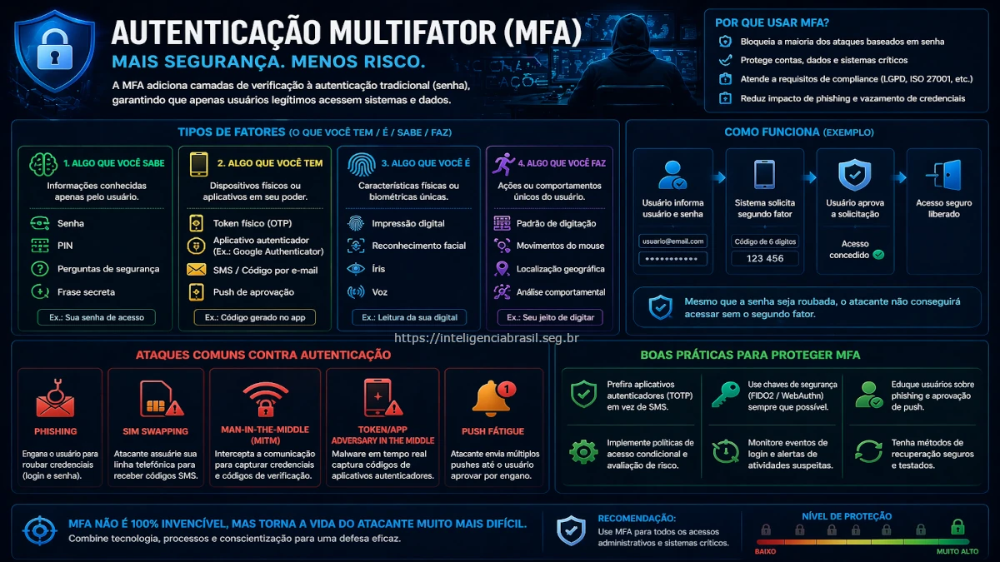

Neste artigo
A Autenticacao Multifator (MFA) tornou-se uma pedra angular na seguranca digital, fornecendo uma camada adicional de protecao contra acessos nao autorizados. Com o aumento dos ciberataques, a adocao de MFA por organizacoes e individuos se intensificou, destacando sua importancia no panorama atual.
Tipos de Autenticacao Multifator
Existem varios tipos de MFA, cada um utilizando diferentes fatores para verificar a identidade do usuario. Esses fatores sao classificados em tres categorias principais:
Fatores de Conhecimento
Incluem senhas e PINs, que sao informacoes que apenas o usuario deve saber.
Fatores de Posse
Envolvem dispositivos que o usuario possui, como smartphones ou tokens de seguranca.
Fatores Biometricos
Utilizam caracteristicas fisicas unicas do usuario, como impressao digital ou reconhecimento facial.
Ataques Comuns contra MFA
A despeito da eficacia do MFA, existem tecnicas que os atacantes usam para contornar essas medidas de seguranca.
MFA Fatigue
Este ataque explora o envio excessivo de notificacoes de autenticacao para cansar o usuario, levando-o a aprovar uma solicitacao maliciosa.
SIM Swap
Os atacantes transferem o numero de telefone da vitima para um novo SIM, permitindo o recebimento de codigos de autenticacao.
Adversary-in-the-Middle (AiTM)
Neste metodo, o atacante intercepta a comunicacao entre o usuario e o sistema de autenticacao, capturando credenciais e codigos de MFA.
Melhores Praticas para Implementacao de MFA
Para maximizar a eficacia do MFA, as organizacoes devem adotar certas praticas recomendadas.
Educar Usuarios
Instrua os usuarios sobre os riscos associados a ataques de MFA e como reconhecer tentativas de phishing.
Implementar Autenticacao Segura
Utilize metodos de autenticacao robustos, como biometria ou tokens fisicos, sempre que possivel.
Monitorar Tentativas de Login
Estabeleca monitoramento continuo para detectar e responder a atividades suspeitas rapidamente.
Comparacao de Fatores de Autenticacao
| Fator | Vantagens | Desvantagens |
|---|---|---|
| Conhecimento | Facil de implementar | Vulneravel a ataques de forca bruta |
| Posse | Mais seguro que conhecimento | Risco de perda ou roubo do dispositivo |
| Biometrico | Alta seguranca | Custo elevado e preocupacoes com privacidade |
Interessado em fortalecer a seguranca de sua organizacao? Nossa consultoria pode ajudar a implementar solucoes de MFA eficazes. Entre em contato conosco para saber mais.
Perguntas Frequentes
A Autenticacao Multifatorial (MFA) requer validacao de identidade atraves de dois ou mais fatores, aumentando a seguranca nas contas.
Os fatores incluem conhecimento (senhas), posse (dispositivos) e caracteristicas biometricas (impressao digital).
Ataques comuns incluem MFA fatigue, SIM swap e adversary-in-the-middle.
A MFA adiciona uma camada extra de seguranca, ajudando a proteger contra acessos nao autorizados mesmo que uma senha tenha sido comprometida.
As melhores praticas incluem educar usuarios, oferecer metodos de autenticacao seguros e monitorar tentativas de login bem-sucedidas e malsucedidas.
Conclusao
A implementacao eficaz de MFA e crucial para proteger as organizacoes contra o crescente numero de ciberataques. Ao compreender os diferentes tipos de MFA, os ataques comuns e as melhores praticas, as empresas podem fortalecer suas defesas e proteger seus ativos digitais.
Para mais informacoes sobre como proteger sua organizacao, consulte nosso artigo sobre MFA Fatigue e Ataques de Bypass.